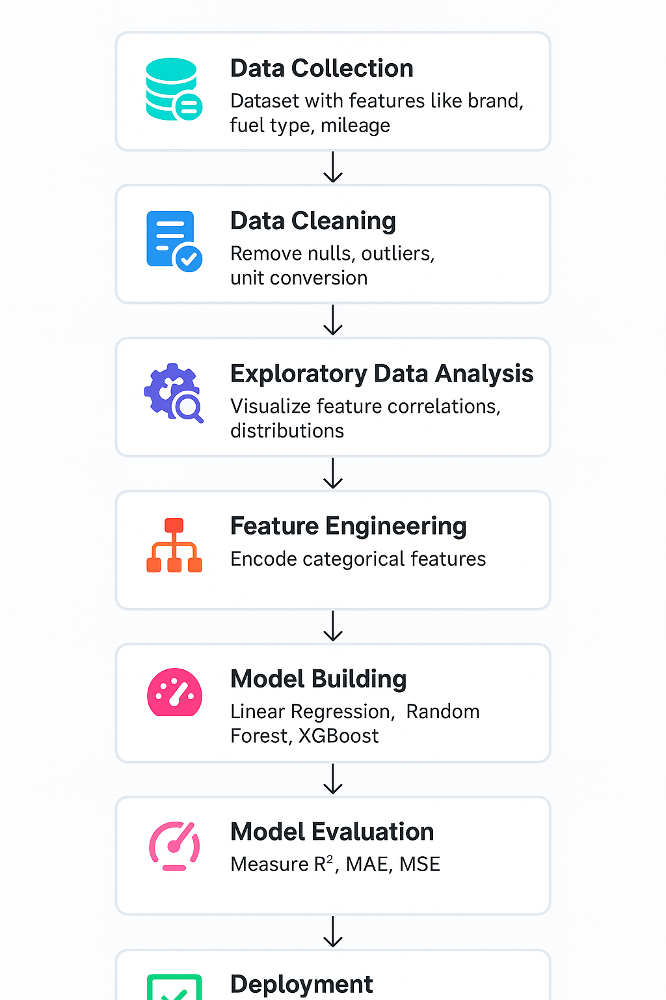

🔁 Project Workflow
This section describes the entire lifecycle of the project, from collecting data to deploying the final model. The process was broken into clear, sequential phases:
📌 Step-by-Step Process
-
Data Collection:
- Dataset sourced from Kaggle with over 8000+ used car listings.
- Included features: year, km driven, fuel type, transmission, mileage, engine, etc.
- Target variable: Selling price of used cars (₹).
-
Data Cleaning:
- Handled missing values using imputation or row removal.
- Standardized units (e.g., “18.9 kmpl” → 18.9).
- Removed outliers using boxplots and domain knowledge.
-
Exploratory Data Analysis (EDA):
- Visualized selling price distribution, skewness, and spread.
- Bar plots for fuel types and transmission categories.
- Correlation heatmaps and pairplots to check relationships.
-
Feature Engineering:
- Derived features like car age and brand name.
- Used Label and One-Hot Encoding for categorical variables.
- Normalized numerical features for better model accuracy.
-
Model Building:
- Started with Linear Regression as baseline.
- Used GridSearchCV for tuning hyperparameters.
-
Model Evaluation:
- Metrics used: R², MAE, MSE for performance comparison.
- Linear Regression outperformed others with highest accuracy.
- Cross-validation applied to confirm reliability.
-
Deployment:
- Pickled the best model for production use.
- Built Streamlit frontend for interactive prediction.
- App hosted locally; ready for cloud deployment.
🧭 Visual Flowchart

Each of these steps is explained in detail in the following pages. You’ll see EDA plots, performance comparisons, and how the prediction system works end-to-end.